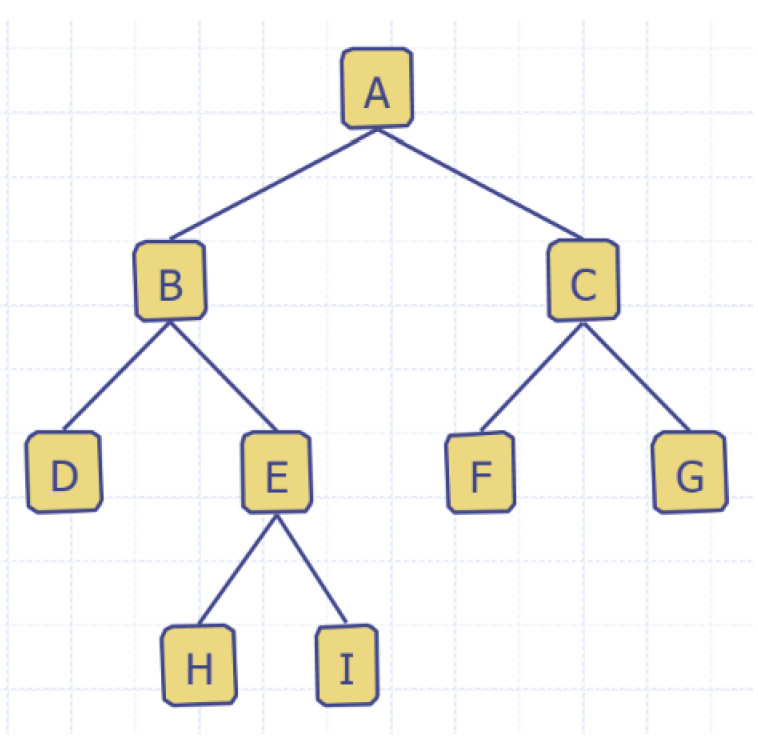
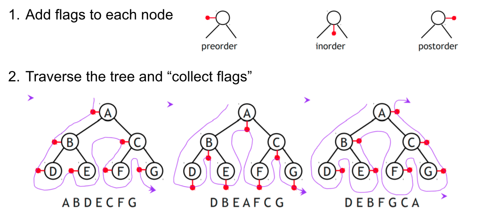
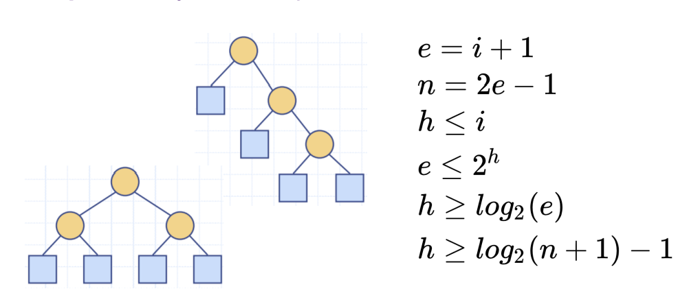

Tutorial 5
- Stacks
- Queues
- Trees
- Tree Basics
- Tree Traversal
- Binary Trees
Stacks
- Last in first out (LIFO)
pop()andpush()are the main methods- Use Arraylist for implementation
Queues
- Array Implementation
- f: Index at the front of the queue
- increment the from index to remove front index
- r: Index at the rear of queue
- increment the rear index to add to end of list
- Index of an element (f + i) % len
Trees
- Hierarchical Data structure
- good representation is parent directory
- Consists of nodes with a parent-child relation
- Root: a node without a parent
- Internal node: a node with at least one child
- External node/leaf: node without children
- Ancestors of a node: always goes UP
- Descendants: child nodes: always goes DOWN
Level
- Root is level 0
Depth of Node/Tree
- Number of descendants from root
- E is depth 2
Height of Node/Tree
- Number of ancestors from leaf
- E is of height 1

Subtree
- Tree consisting of a node and its descendants
- E's subtree is [E: H, I]
Tree ADT methods
| Method | Description |
|---|---|
getElement() |
Returns element stored at this position |
size() |
Returns the numer of positions in the tree |
isEmpty() |
Indicates if the tree is empty |
iterator() |
Returns an iterators of all elements |
positions() |
Returns iterable collection of all positions |
root() |
Returns position of the tree's root |
parent(p) |
Returns position of parent |
children() |
Return's iterable collection of p's children |
Tree traversal
- In order
- Pre Order
- Root, left-right
- Post Order
- left, right, root

Binary Tree terminology
- Full level
- Level contains nodes
- Complete tree
- for height h
- levels are full
- Level , all nodes are as far left as possible
- Proper/full Binary tree
- Each level (besides leaf nodes) have two children
Binary tree performance:
| var | description |
|---|---|
| number of nodes | |
| number of external nodes | |
| number of internal nodes | |
| height |
Performance:
(when at least two nodes)
Proper Binary tree properties
